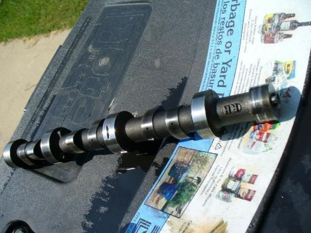
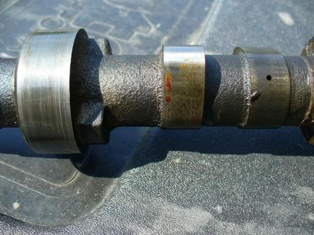
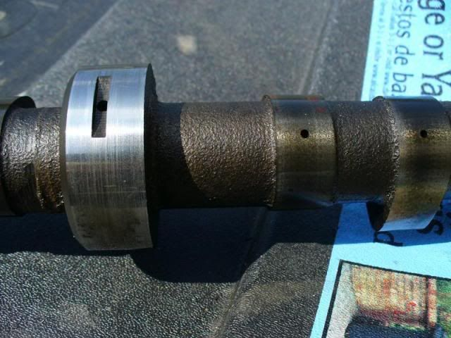
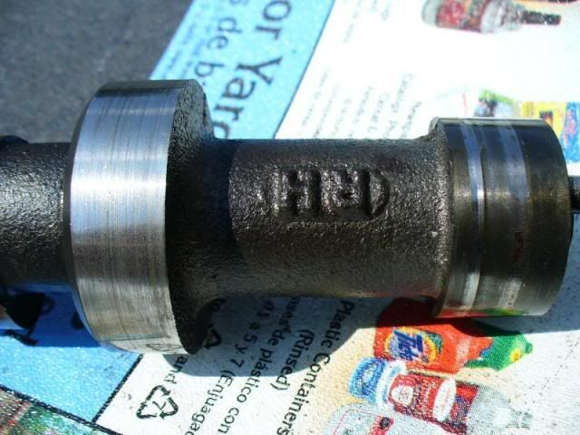
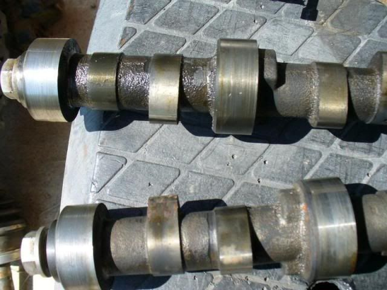
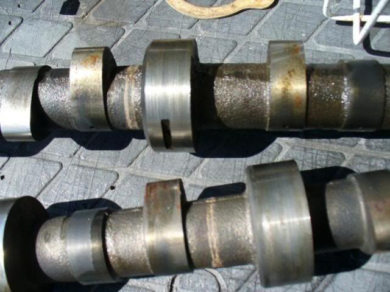
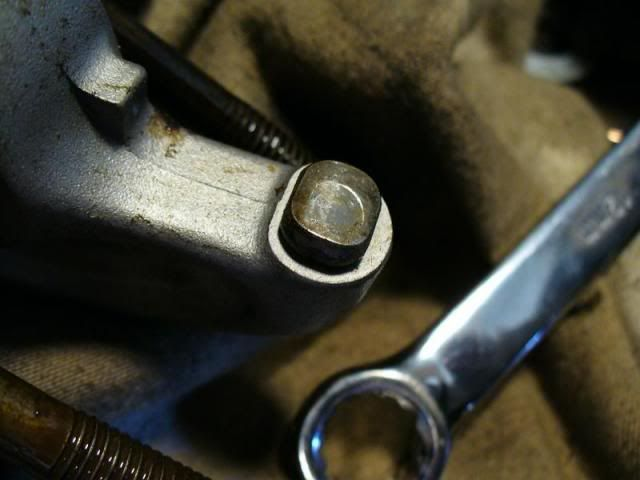
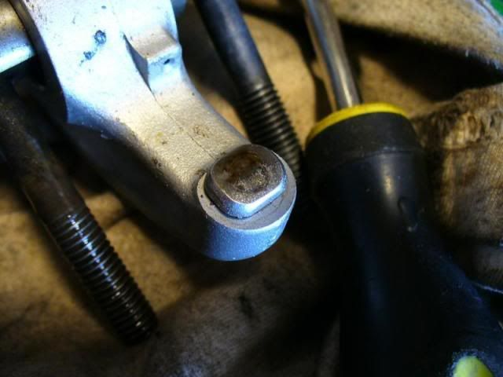
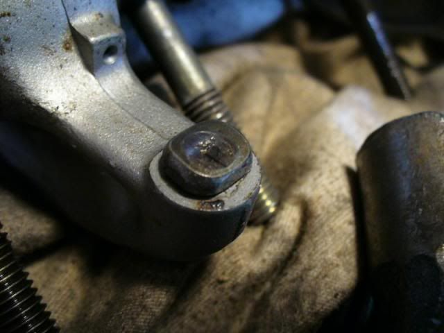

-
I decided to pull the heads apart today. I have two sets of heads. Set #1 looks like it was on the motor that was run without oil. Set #2 looks pretty good, but it's not perfect.
Set #1 came with a set of Nissan Motorsports cams. I pulled the cams out today to show you guys some pictures and get your take on them. The main bearing surfaces (not the lifter lobes) are scored on both cams. Here are some shots of the worst cam (the RH cam) and then some shots of both cams together:






The RH cam journals have enough scoring to almost catch your fingernail on the two outside journals. The inside journals are not quite as bad. The LH cam journals have slightly less scoring.
Here are a few pictures of the rocker arms where they contact the valves:



If those pictures aren't clear the marks you see are actually indents that are pretty deep into the rockers. Those are from set #1. The rockers from set #2 are not indented like that.
Are the Nissan Motorsports cams salvageable? I have heard of people polishing cam and crank journals. Is that something that can be done with light grit wet sandpaper or emery cloth? I don't think I would have to take too much off of the journal surfaces to smooth them out, but what can be done about the cam bearings in the heads since the cams will now have a slightly smaller OD? -
Get new rocker arms fo sho, those will destroy any set of cams you put in there. Take your cams to a competant machinist to determine of they are salavageable, do not attempt anything on them by yourself.
-
Sohc vg heads do not have cam bearings in the heads. If they are out of spec you have to replace the whole head.hoohaa wrote:
Are the Nissan Motorsports cams salvageable? I have heard of people polishing cam and crank journals. Is that something that can be done with light grit wet sandpaper or emery cloth? I don't think I would have to take too much off of the journal surfaces to smooth them out, but what can be done about the cam bearings in the heads since the cams will now have a slightly smaller OD?Bolt on, fast, z31. You can only pick two.
Old weaksauce numbers: 391hp/433tq

-
the scoring could be from rust buildup however your wear pattern shows a distinct lack of oil pressure
I say there is more wrong with that motor than you think -
The "oil" I drained from this motor looked like a vanilla shake. :lol: -
Then you had a blown headgasket that allowed coolant into the oil.hoohaa wrote: The "oil" I drained from this motor looked like a vanilla shake. :lol:Bolt on, fast, z31. You can only pick two.
Old weaksauce numbers: 391hp/433tq
-
It wasn't mine. I bought an engine that had these cams installed from a guy. He said he had a blown headgasket, but replaced the gaskets. Then the motor seized up. Either the contaminated oil was never changed out after the HG replacement or the HG blew again or a head is cracked. Either way I am looking for a new oil pump. -
[quote]Matt89 wrote:Hi all,,,i am in the same boat and not wanting to start a new thread,i will work of this 1Originally posted by hoohaa
I have a vg30 out of a 300zx,Upon tear down,i notice that the cam journals in both heads r scored.Now what this guy above is saying is that they r junk?? There is no other way??
Like machine them out and insert something that will fit??
Or tig welding the Alumuim and rebore them?
I live in europe so i really dont have the parts stores or wrecking yards like in north america… -
Well by the sounds of it the guy did not take care of the motor at all. Chances are if the headgasket blew and he dident even care to change the oil after that the heads are probably warped, i would bring those to a machine shop as well and see if they are still usable and able to be resurfaced.1989 300ZX 2+2 N/A GLL
Auto to Manual Swap
NA2T Complete
-
"The Guy" bought the motor screwed up as pictured and as previously stated.
I am going to take the cams to a machine shop and have them take a look at them. Maybe they will be able to polish them up.
If your heads are badly scored I don't know what to tell you. I trashed the heads. -
[quote]Matt89 wrote:I dont think you have to replace the whole head, I have seen a few nissan 4cyl heads(same design) that have had been re-worked with cam bearing inserts. Dont know which machine shops do this but its just what I have seen. peace.Originally posted by hoohaa"Its the s12's sexy over weight step daughter, the z31" -
Unless the head cast its self is cracked or otherwise structurally damaged then the moving parts and guides can be replaced. I replaced a ton o' stuff on my heads a couple years ago. Rockers, rocker rod/cam (blanking the proper name on that right now) valves, valve guides, springs, lifters, etc.
In my case I didn't need to replace all the rockers, only about half of the rockers showed any real wear and warranted replacement. At the end of the day it wasnt cheap for the parts and machine work done, but it is definitely doable. The key is to find a decent shop that does a lot of head work and take them your parts to see what they think.Just stand back and throw money.
Performance costs money.
Reliable performance costs more. -
one thing no one mentioned is to take pictures of the head's journals… since the head is softer than the cams there would be damage there too, you can get new stock cams from anywhere/anyone cheaply enough as long as the heads are ok

Copyright © 2006–. All rights reserved. Privacy Policy